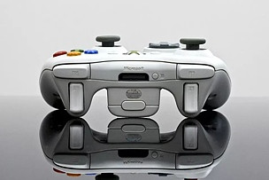

1
继主网上线公测之后，Baer Chain“曲率航行”将继续驶向位于全球区块链中心的欧洲。
6月19-20日，全球最具影响力的区块链博览会——BLOCKCHAIN EXPO 2019在荷兰阿姆斯特丹举办。Baer Chain受邀出席大会并参展，将在展会上携手主办方，举办“Curvature Navigation”专场开发者大会。
5月，Baer Chain“曲率航行”全球性系列开发者大会在韩国启动以来，引起行业内外的广泛关注。
大会旨在通过汇聚全球区块链行业的顶尖游戏开发者团队、优质投资方以及权威媒体，围绕区块链的发展趋势、游戏开发等主题进行深入交流与探讨。
2
作为欧洲最大的区块链博览会，BLOCKCHAIN EXPO 2019为全球区块链企业、开发商以及行业爱好者提供一个相互交流的平台，了解区块链这项正在迅速成为主流突破性的新科技，探讨区块链技术为金融服务业、制造业、医疗、能源、游戏等垂直行业带来的产业变革。
BLOCKCHAIN EXPO 2019吸引了世界各地区块链从业者和科技爱好者。据悉，本次展览会将汇集全球最具发展价值的350多家区块链项目方参展；此外，大会还将举办4场大型商业主题活动，并已邀请到全球500多位各行业领域专家进行主题演讲，参会人员规模将达万人。
Baer Chain将在BLOCKCHAIN EXPO 2019 上进行持续两天的项目会展，向大家展示Baer Chain从成立之初一路走来的发展历程，以及基于Baer Chain技术的区块链游戏开发优势。
此外，Baer Chain还将于6月20日在阿姆斯特丹RAI会展中心，举行一场面向全球的开发者大会。
届时，Baer Chain CEO-Vincent将对项目及其技术开发进行主题演讲，并邀请荷兰加密行业企业家Ruud Feltkamp、知名商业媒体人Richard Kastelein等专家进行圆桌会议，共话全球区块链技术的创新与突破。
3
在区块链兴起的早期，全球各大头部游戏企业就开始积极布局该领域。可惜当时行业中的公链性能并不能满足所开发游戏的上链需求，严重阻碍了游戏开发商将自己的杰出作品搬上区块链的美好愿景。

就在行业寒冬的2018年，Baer Chain作为全球游戏公链的开拓者，始终坚持以“技术开发与生态建设”为双螺旋驱动核心，率先实现应用落地的价值飞跃，成为“区块链+游戏”垂直赛道上的价值领跑者。
目前，已有数十个全球顶级游戏开发团队，正在积极进行基于Baer Chain技术架构的区块链游戏的开发，游戏开发成功后，将陆续登陆Baer Chain生态。
Baer Chain主网已经开启公测，随着主网上线时间节点的越发临近，Baer Chain“曲率航行”将继续探索更多价值未来，驶向区块链+游戏产业价值的新纪元。